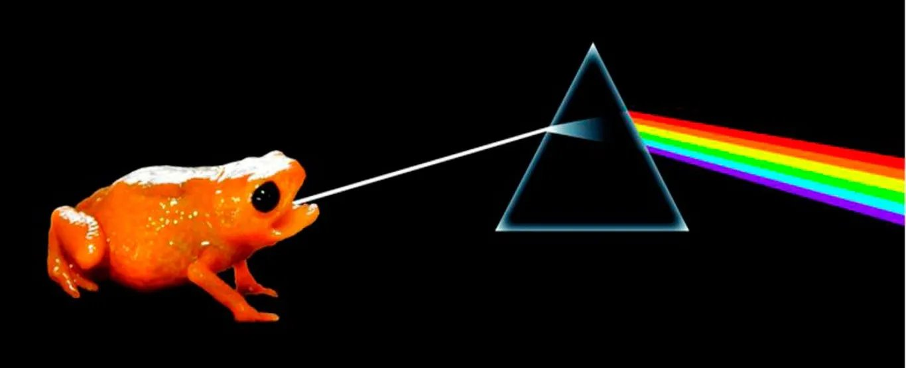
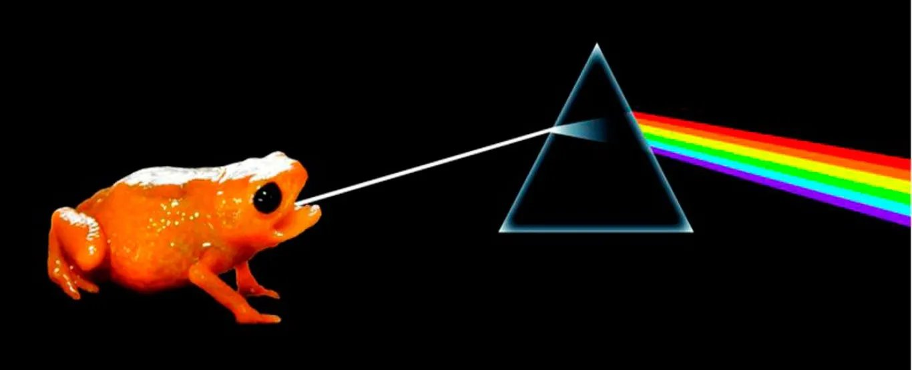

Quem somos?
Nos somos a AMDS, a Associação Mundial Dos Sapos, fundada em 1977, por Samuel Anastacio Perreira OliveiraNossa equipe de biologos, filosofos, arquitetos, historiadores, entre outros, procura entender
toda a magnitude feita por tais seres que povam nosso planeta.
Com o objetivo de conheçer, espalhar, e manter toda a cultura amfibia dos sapos
Caracteristicas Gerais
Sapos são animais anfíbios, ou seja vivem em terra e água. Eles possuem corpos curtos, mas robustosTem uma pele úmida e rugosa, pernas bem desenvolvidas que ajudam a terem melhores saltos
Possuem olhos salientes e grande, e glândulas , existem em quase todos os continentes do planeta(so nai habitam a antartida)
São indicadores de saúde ambiental e predadores de inumeras pragas e insetos
Os Ambios em meio a nossa sociedade.
É algo de censo comum, que os sapos não estejam entre nossas vidas em regiões urbanas, mas muito pelo contrariosão exatamente nestes locais que vemos muitos deles vivendo uma vida semelhante a nossa na sociedade
Alguns Sapos em nossa sociedade
.jpg)
.jpg) muicho texto mucho texto

muicho texto mucho texto
 .jpeg) muicho texto muicho texto
muicho texto muicho texto
.jpg)
.jpeg) muicho texto aaaaaaaaa
muicho texto aaaaaaaaa